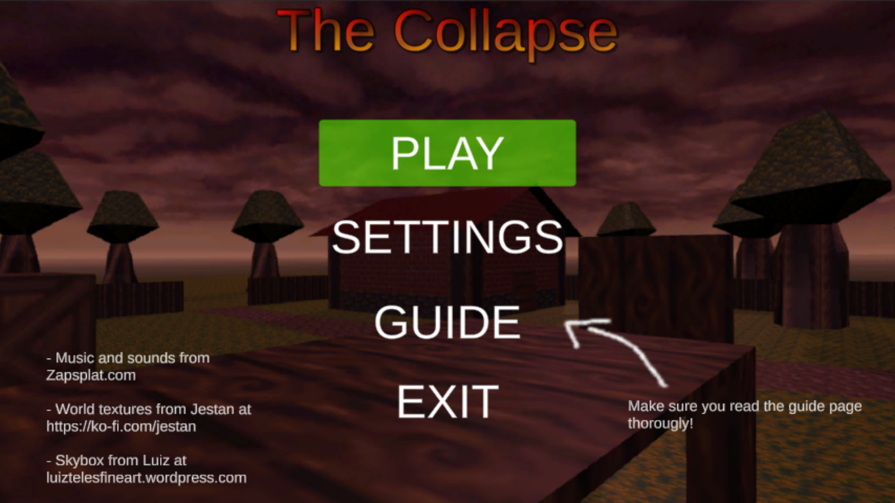
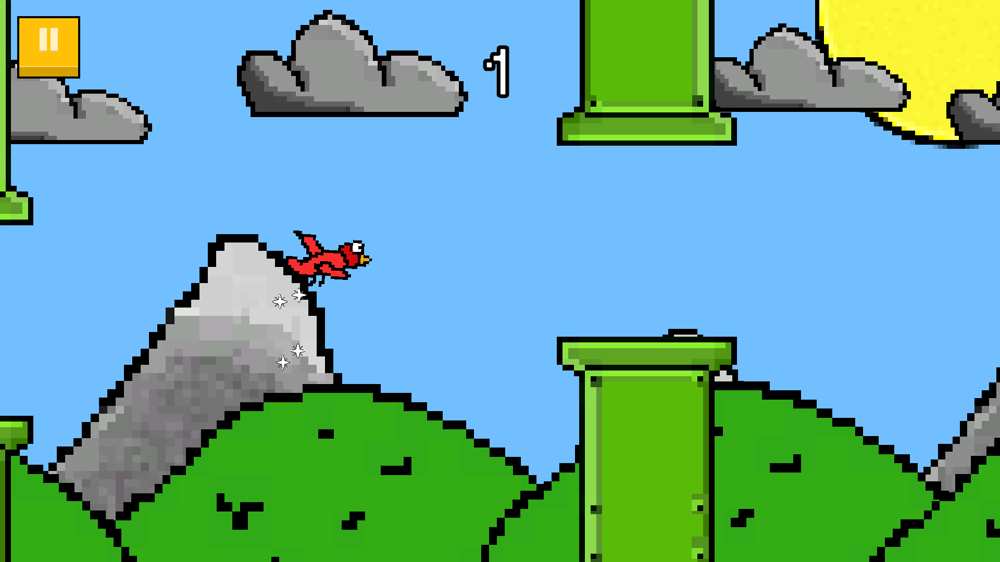
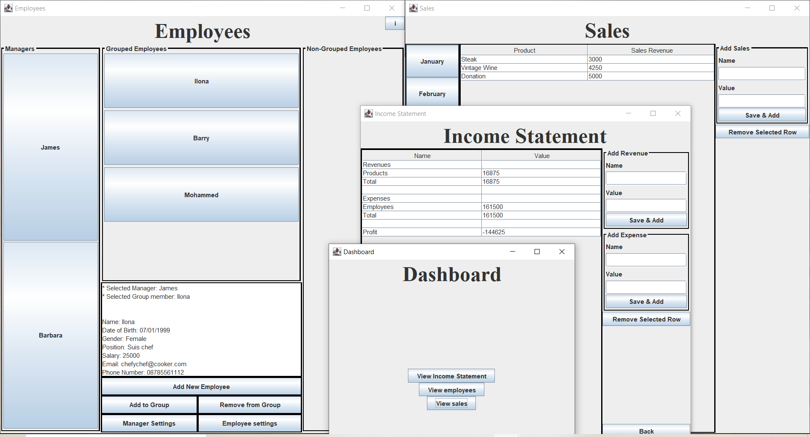

I am a Computer Science undergraduate, with an interest in entertainment
technology and video game development. I enjoy learning newthings and
can pick up new skills relatively quickly. With an attention to detail,
I will always try to make the best of what I can.
Education
2021 - Present
Bsc Computer Science - Queen Mary University of London
2019 - 2021
A-Level - Loxford School of Science and Technology
Experience
October 2022 - Present
Working at The Co-op as a Customer Team Member
September 2021 - May 2022
Part of the AI & Robotics Society, where
we design and create robots for a tournament.
Check out some of my projects

The Collapse main menu
The Collapse Game
For our A-levels, we were required to complete an NEA (Non-Exam Assessment).
This was a really important project for me, as I learned how to use Unity,
Blender, and C# by myself. This is a first person, wave based shooter, where
the objective is to survive for as long as possible nad gather as much
points as possible. The game makes use of animations and models created
mostly in Blender and my variation of the A* pathfinding algorithm.

NotFlappyBird in-game
NotFlappyBird Game
This was one of my personal projects that I decided to make for fun. This
project was heavily inspired by 2013's Flappy Bird game, originally developed
by Dong Nguyen. However, this game is infact "NotFlappyBird" and is a recreation
of sorts.

All the Pages and buttons
Business Dashboard
This was a project that I have created for one of my modules at Queen Mary University of London.
It is a business dashboard that allows users to create and view income statements.
This was one of the biggest projects I did using
Java.